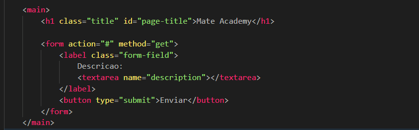
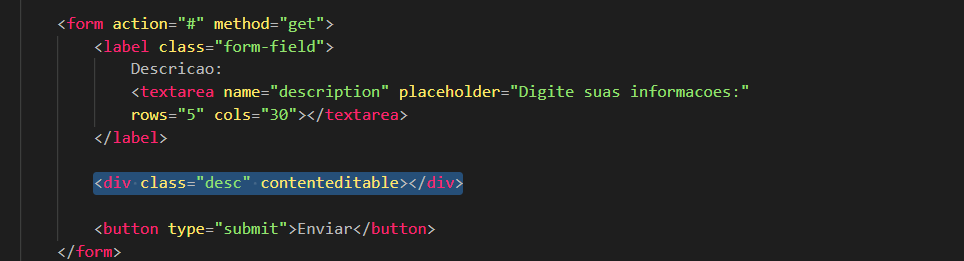

Textarea
Intro
Aqui iremos ver uma area para comentarios ou textos maiores em nosso formulario.
Aqui iremos ver uma area para comentarios ou textos maiores em nosso formulario.
HTML:

Algo muito util em alguns tipos de formularios e o uso de uma area onde o usuario possa escrever textos maiores, como uma descricao sobre si mesmo, comentarios ou experiencias profissionais.
Com a tag textarea, conseguimos fornecer um campo de texto maior para comentarios ou outros assuntos.
Tambem podemos definir um texto padrao dentro do textarea, bastando adicionar um conteudo entre a abertura e o fechamento da tag.
Dentro de nosso campo, tambem podemos adicionar um placeholder para ajudar o usuario a entender melhor como aquele campo deve ser utilizado.
Com o atributo rows, conseguimos definir a quantidade de linhas visiveis do textarea.
O atributo cols e utilizado para definir a largura do campo em quantidade de colunas.
O textarea e muito utilizado em formularios, porem em alguns casos onde precisamos de uma maior personalizacao visual, alguns projetos utilizam outras abordagens.
Utilizando o atributo contenteditable, conseguimos transformar uma div em um campo editavel.
Essa abordagem pode oferecer uma maior liberdade de estilizacao e personalizacao do layout.
Exemplo:

Apesar do contenteditable permitir mais liberdade visual, o textarea continua sendo a opcao mais recomendada para formularios tradicionais, principalmente por questoes de acessibilidade e comportamento padrao do navegador.
Por padrao, o textarea permite que o usuario altere seu tamanho. Caso desejemos impedir isso, podemos utilizar a propriedade resize: none no CSS.
Exemplo:
textarea {
resize: none;
}